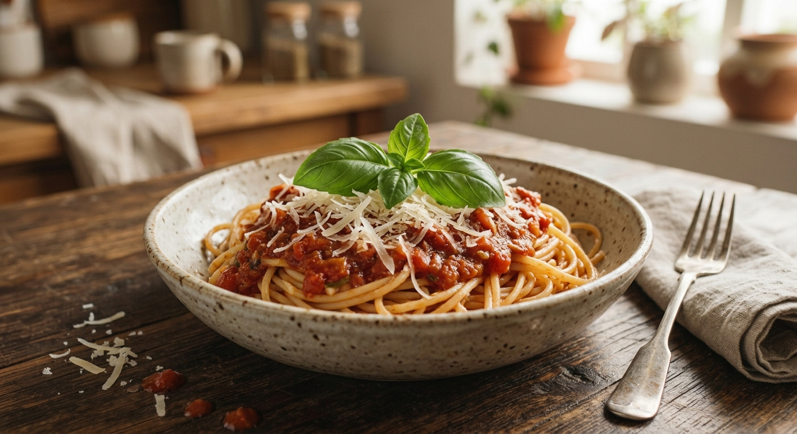
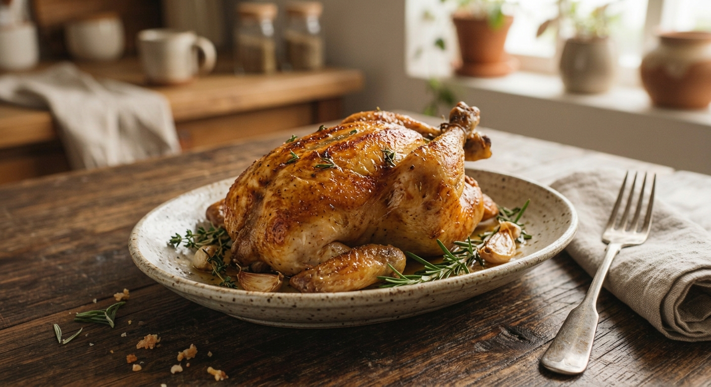
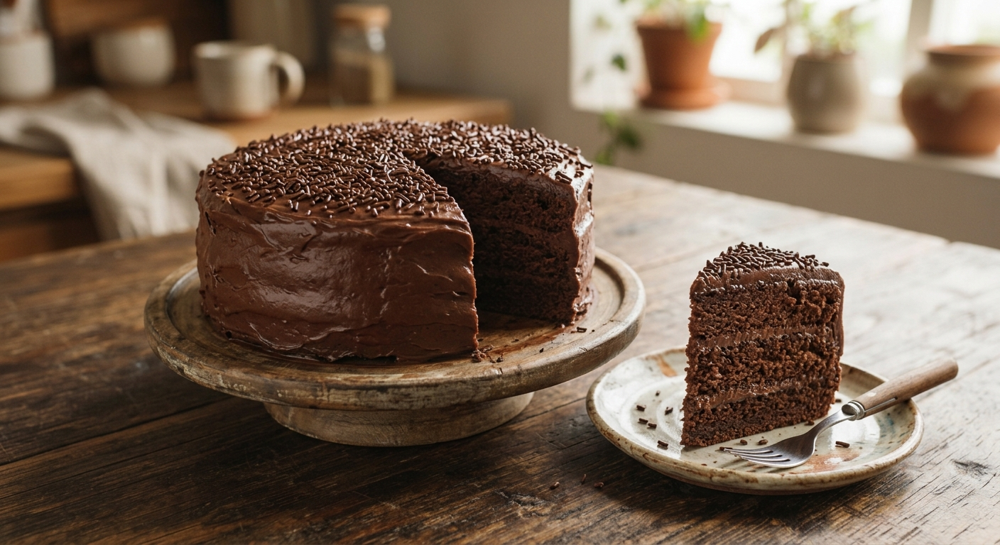
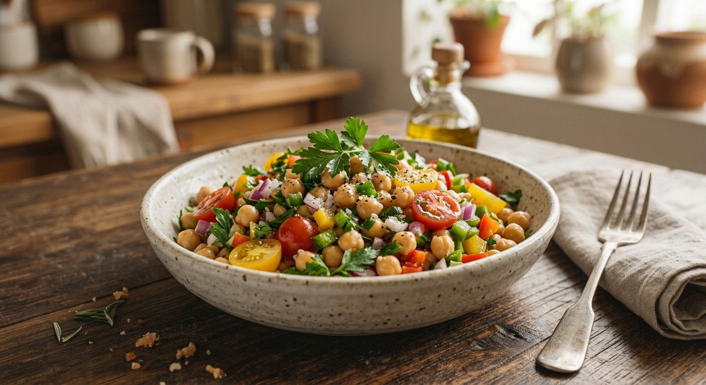
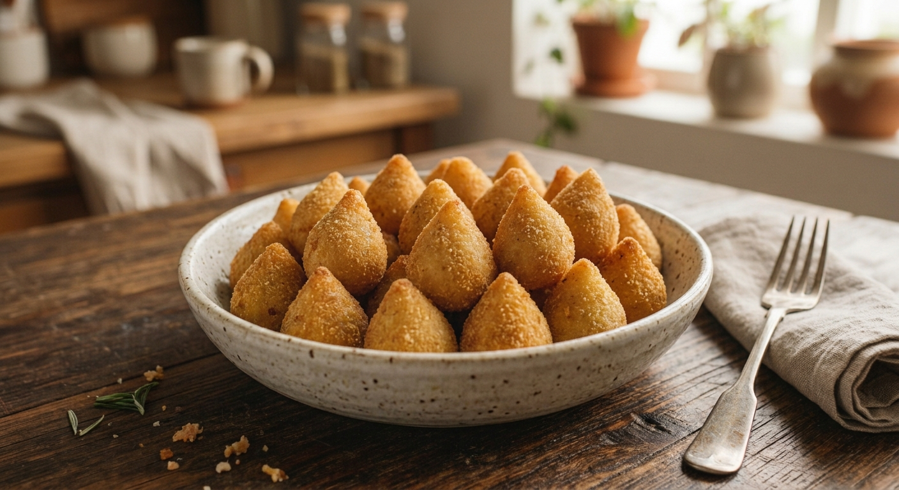
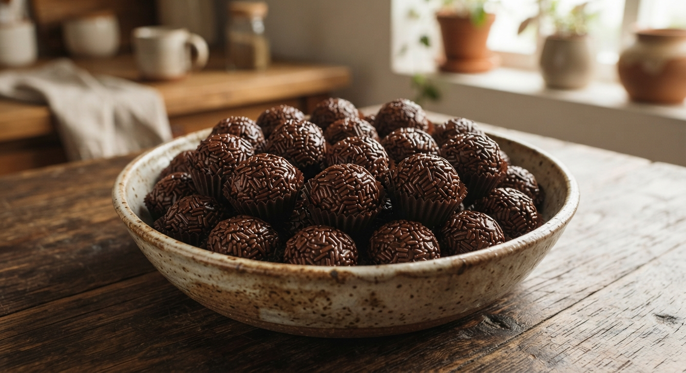

MassasMacarrão ao molho de tomate
Um clássico simples e rápido, perfeito para o almoço do dia a dia.
⏱ 30 min
🍽 4 porções
Por Maria
Ver receita
Veja as receitas compartilhadas pela nossa comunidade.

MassasUm clássico simples e rápido, perfeito para o almoço do dia a dia.
Por Maria
Ver receita
CarnesFrango suculento e dourado, temperado com ervas e alho.
Por João
Ver receita
DocesBolo fofinho com cobertura cremosa, ideal para festas e lanches.
Por Ana
Ver receita
SaladasRefrescante, nutritiva e pronta em poucos minutos.
Por Carlos
Ver receita
SalgadosMassa macia e recheio cremoso de frango desfiado.
Por Paula
Ver receita
DocesO doce favorito dos brasileiros, com poucos ingredientes.
Por Lucas
Ver receitaNenhuma receita encontrada.